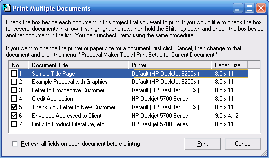

|
Print Multiple Documents (Proposal Maker Tools Menu) Proposal Maker Main Topics (List) Proposal Maker Menus (List) |
  
|
Print Multiple Documents (Proposal Maker Tools Menu)
Proposal Maker Main Topics (List) Proposal Maker Menus (List)
|
Print Multiple Documents (Proposal Maker Tools Menu) Proposal Maker Main Topics (List) Proposal Maker Menus (List) |
|
Icon: Keyboard shortcut: Alt, M, M
Opens the Print Multiple Documents dialog, pictured below, which lets you print more than one document at a time from the current project.

In the example picture above, documents number 5 and 6 are selected for printing, and they will print to different printers and use different paper sizes. If the Printer column says, "Default" followed by the printer name, that means that you have not yet specified a printer for that document with the Print Setup dialog, so it will print to your current default printer in Windows.
Refresh all fields on each document before printing: Normally, you should leave this box unchecked and instead visit each document that you intend to print and verify that each field (especially picture fields) looks right. For example, if you have a table in which text fields that can vary greatly in length are used you might want to be sure that the column width of the table is appropriate for the current field values. And for picture fields that can change to different pictures, it is important to verify that each picture size is appropriate and that any new pictures fit within the space you allocated for them on the document.
Print Button: Prints the selected documents.
Cancel Button: Closes this dialog without doing any printing.